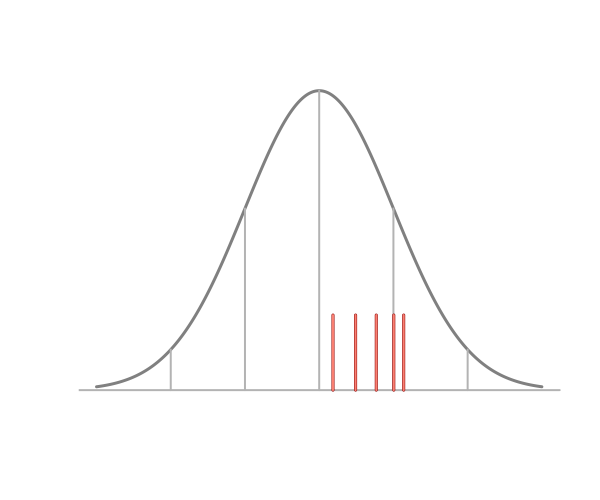

14 Statistics and language
14.1 Statistics and language
Statistics is a complex discipline requiring a large collection of ideas and definitions. Non-experts in the field might be surprised to find out that many common statistical terms lack a unified defition among experts, even within a statastical paradigm or application context. More troubling, experts’ personal defintions of concepts believed to be essential can be divergent, or even contradictory, to that of other experts. One such examples it the term “representative sample”, which is nearly universally thought of as an important concept, yet has no unified definition within the field of statistics. This fact was noted and largely studied by the celebrated statisticians William Kruskal and Frederick Mosteller in a series of articles in the late 1970s and early 1980s (Kruskal and Mosteller 1979a, 1979b, 1979c, 1980). These articles gave nine definitions of a representative sample and surveyed the statistical and application literature demonstrating that all nine of the uses occur commonly.
14.1.1 The data are Gaussian
We’ll return to “representative sampling” in a bit. For the time being, consider the phrase “the data are Gaussian” or “the data are normal”. What do these statements mean? Some possibilities
- The data, when plotted via a histogram or whatever, looks like a Gaussian distribution.
- A statistical test for non-Guassianity failed to reject.
- The data were actually generated from a Gaussian distribution.
- The data is not inconsistent with having been generated from a normal distribution.
- IID draws from a normal distribution is an accurate model of the data generating process.
These are all very related, but different, statements. For example, a small dataset can be simulated from a Gaussian distribution (3 or 5 depending on your point of view), yet not look at all like a Gaussian distribution (fails 1 or 2). Data can reject a test of non-Gaussianity yet (fails 2.) yet appears Gaussian in a plot to many observers (1.). One could argue (and I believe) 3 is never true.
This is an issue, since it’s generally not clear from the context what the person speaking the phrase actually means and 1-5 can have different implications for interpretation. Kass (2011) discusses this phrase explicitly:
… “Let us assume the data are normally distributed” and we proceed to make a statistical inference, we do not need to take these words literally as asserting that the data form a random sample. Instead, this kind of language is a convenient and familiar shorthand for the much weaker assertion that, for our specified purposes, the variability of the data are adequately consistent with variability that would occur in a random sample. This linguistic amenity is used routinely in both frequentist and Bayesian frameworks.
Here, he clearly is asserting something like 4 or 5. Note the specific addition of the word “assume”, which is doing a fair amount of work in the sentence. Hihgly experienced statisticians, like Dr. Kass, have built up an intuitive sense of exactly how much detail to include when writing about analyses. For those newer to the field, I would suggest the spelling things out more until this sense is developed: “We assume that the data are a random sample from a normal distribution, which is supported by our exploratory plots”.
14.1.2 Representative sampling
In survey sampling, sample representativeness has a fairly strict definition. A sample is representative if observed predictor variables have the same distribution as the population you would like to generalize to [FIND A REFERENCE FOR THIS]. If not, weights are often used to enforce this. Outside of this domain, the phrase is basically meaningless.
The largest breakdown in calling a sample representative is whether or not it is a description of the process or a description of the sample itself. For example, consider these questions:
- Are all random samples representative?
- Does representativeness require luck even if the sampling is random?
- If you know that a sample is representativve, do you need statistical inference?
The most common definition of a representative sample is one that has inherited key characteristics of the population, which is the strongest version of the term. This assumes that we were lucky with our sample and somehow got a mirror of the population. This definition is problematic. It assumes that key aspects of the target population are simply known and, in contradiction, also need to be treated with uncertainty.

As an example consider the image above. Are the data representative of the normal distribution outlined in the figure? All five points being above the population mean lead many to conclude that the sample is not representative. Five points being above the mean occurs with 1/32 = 3.125% probability for a random sample from any symmetric distribution. So, even for this small of a dataset, it’s unlikely. However, if one is to assume that a representative sample must have at least one measurement on either side of the mean, a finite 100% confidence interval for the mean could be obtained as the min and max. No statistician would argue the point that a 100% interval can be obtained via the min and max. So our assumption of sample representativeness lies in direct contrast with our probability model. Our intution of sample representativeness makes absurdly strong assumptions.
Bizarrely, researchers often invoke representativeness, but do not exploit the assumption. Typically, we assume process representativeness; that is that the sample is random. Perhaps the most charitable way to summarize this line of thinking is: hoping for the best (assuming sample representativeness), but preparing for the worst (assuming process representativeness).
This idea of hoping for the best while preparing for the worst perhaps belies a general distrust of formal statistical inference, even among practicing statisticians. That is, by peforming standard statistical inference, such as confidence or credible intervals, one is addressing uncertainty in the best ways known. However, an assumption of sample representative appears to be the hope of actually realized correct evidence.
An assumption of sample representativeness allows researchers to keep their analyses more fully within the data, avoiding or downplaying the role of formal inference. One does not need to generalize to the population if one has a realized mirror image of it in hand. This would fall in line with the idea of a preference of thinking in the terms of sample representativeness as another instance of preference for the more direct and literal System I thinking over labored and conceptual System II thinking.
14.2 Summary
Our statistical models connect our data to a population. Our language connects our models to an audience. Tukey described the need for fuzzy concepts in applied data analysis [CITATION]. However, we could all try to commit to eliminate unnecessary fuzzy concepts. The most important of these is differenatiating between sample properties and process or conceptual processes.
14.3 Reading
- Kaplan, Rogness, and Fisher (2014)